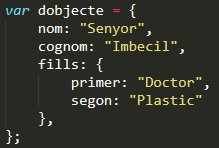

git status: Serveix per veure els canvis causats a la web fets localment i per veure si ja s'han preparat per a cometre i/o pujar
git add .: Serveix per a marcar els canvis a cometre comunicats amb el git status. Es fa servir quan el git status marca els canvis en vermell
git commit -m "Comentari": Serveix per a cometre els canvis marcats al git add . afegint un comentari. Es fa servir quan el git status marca els canvis en verd
git push: Puja definitivament els canvis comesos amb el git commit -m a la web. Es fa servir quan el git status comunica que la web està ahead at 1 commit
browser-sync start --server --directory --files "*": Serveix per a sincronitzar una pestanya del navegador amb el html seleccionat. S'ha d'estar a la carpeta amb el html per a que funcioni
aquest no marca lineaaquest continua a la linea anterior
el que marca nova lineapot contenir un que no marca nova lineai quedar-se tan panxo
Subtítols
quanta més
numeracio de
subtitols més petit
es farà al final
Elements diferents
Element section per a marcar una seccióElement article per a marcar article dins de secciósegon article a secció 1tercer article a secció 1Segona secció per a diferenciar amb la primeraArticles dins la segona secció seran vists diferents dels de la primera seccióArticle 2 secció 2Article 3 secció 2
Llista
Exemple de llista
L'element ul marca l'inici
d'una llista sense ordre i
l'element li marca cada un dels components
L'element ol fa que la llista tingui un ordre, aixi mateix en una llista dins d'una altre llista la llista de dins ha d'estar dins de l'element li de la llista de fora
Amb l'element a, podem fer links a les altres pàgines de la propia web, per exemple fent click aquí o podem fer links cap a fora fent click a les imatges tan maques que tenim a baix. Posant target="_blank" al element a farem que els links s'obrin a una pestanya nova. Un altre exemple de links és el propi index
Imatges
Les fotos poden ser part de la carpeta del mateix document html(com les que ja tenim al apartat Fotos) o poden ser de fonts externes com la seguent:
També és casi obligat posar un alt que defineixi la foto, i un height(altura) i un width(amplada) per a establir el tamany
Aquest paràgraf esta aquí per a deixar que el css el canvii d'estil com marqui quan em roti, per aixo es veu d'un color diferent, una lletra diferent, tamany... Per a veure-ho més clar he d'allargar el text una miqueta posant la lletra del sol solet: Sol solet, vine'm a veure vine'm a veure sol solet vine'm a veure que tinc fred. Si tens fred posa't la capa posa't la capa si tens fred, posa't la capa i el barret. No tinc capa ni barret, per abrigar-me, per abrigar-me no tinc capa ni barret,per abrigar-me quan fa fred!. Per a
Modes de selecció del css
Per element: el css selecciona tots els elements que tinguin el mateix nom(tots els h2, tots els p, tots els article). En la sintaxi, l'element es posa sol i ja esta. Escriptura en css: p {}, h2{}.
Per class: el css selecciona tots els elements que comparteixin la mateixa class, és a dir tots els elements que tinguin class="el mateix" independentment del nom. Diferents elements poden compartir una mateixa class. Un element pot tenir més d'una class, només hem de posar un espai entre elles al mateix atribut class. Escriptura en css: .blue {}, .text{}.
Per ID: el css selecciona l'element que té el ID definit. Funciona similar a la seleccio per class pero només hi pot haver un element amb el ID. Escriptura en css: #arbre{}, #deu{}.
Podem combinar les maneres de seleccionar del css per a aplicar les mateixes regles a diferents elements de moltes formes diferents.
Es poden combinar regles de seleccio per a augmentar l'aplicacio(aplicar a un tipus d'element+una class, una class+un id).Exemple de css: p, .text{}(tots els p i els class=text) o .verd, #arbre{}(tots els class=verd i el ID=arbre).
O també en poden combinar per a aplicar-les de forma més restrictiva:
El class d'un element: només es veuran afectats les entitats que comparteixin un class i un element definits. Exemple en css: p.hey {}(Tots els p amb class=hey)
Element dins element restrictiu: es veuran afectats els elements que estiguin dins un altre element definit directament, pero no es veurà afectat si el primer element esta dins d'un altre element i aquest dins del segon element. Exemple en css: div > p {}(tots els p dins de div directament)
Element dins element permissiu: és similar al anterior exemple, pero en aquest cas ignora la regla de l'element dins d'element dins d'element aixi que es pot aplicar la regla a tots els elements dins de l'element. Exemple en css: div p(tots els p dins de div sense discriminar)
En aquestes regles de dins d'element també es poden fer servir diverses seleccions, per exemple per a aplicar elements concrets dins d'una class o d'un ID, o aplicar a una class només si estan dins un element concret, o un ID. Exemple en css: #hol div {}(tots els div dins del ID=hol sense discriminar), div > .yey {}(tots els class=yey dins d'un div directament)
Pseudoclasses
:link : aplicarà l'estil als links no visitats
:visited : aplica l'estil als links ja visitats
:hover : aplica l'estil quan es passa el ratoli per sobre
:active : aplica l'estil quan el ratoli l'esta clicant a sobre, prova a clicar a aquesta frase
:nth-child():aplica l'estil segons el que es posi entre parentesi(4, odd, 15). Es pot combinar amb les altres pseudoclasses
Mètodes d'estil
Hi ha tres maneres d'aplicar el css en un document html:
Arxiu extern: Creant un link a l'arxiu extern css amb les instruccions dins l'eleent head de la següent manera: link rel="stylesheet" type="text/css" href="nomdelarxiu.css"
Element style: Creem l'element style dins de l'element head i hi posem a dins les instruccions css
Dins de l'element: Posem la norma css dins de l'element. No haurem de posar target al css perque aplicarà la norma a l'element, pero per a aplicar-ho a altres hem de copiar i enganxar-ho tot. Exemple d'escriptura: p style="text-align:center;"
Resolució de conflictes css
Per a resoldre conflictes en css, és a dir normes d'aplicació contradictories hi ha diferents maneres d'acabar amb els problemes
Origen: és una norma molt simple, guanyarà la norma de més a vall ja que el navegador llegeix els arxius de dalt a abaix. Si les propietats no són contradictòries però apunten al mateix element, les normes es fusionen. Un exemple molt fàcil és veure que tot el text té un tipus de lletra menys aquesta part que té marcada una font diferent
Inherència: significa que si apliquem una propietat css a un element, tots els elements de dins es veuran afectats. Ara mateix el div d'aquesta part té marcat el color blau, així que aquesta lletra és blava per pebrots
Especificació: aplica l'estil seguint un ordre d'especificació, es a dir aplicarà el més específic. No obstant si posem l'atribut !important, l'ordre d'especificació se'l petarà, però no és gens recomenable utilitzar-ho, millor fer servir un id. Ordre d'especificació
Directe al element: és l'aplicació de la propietat css dins de l'element que hem vist abans
Aplicació per ID: en els mètodes de selecció del css és el que selecciona per ID
Aplicació per classe o pseudoclasse: crec que aquest s'explica sol
Aplicació per element: també s'explica sol. Es pot consultar els mètodes de selecció de css però no crec que fagi falta
Atributs del css
Text:
font-family: establex la font de la lletra(Arial, Tahoma...)
color: color del text
font-style: estil del text(italic)
font-weight:nivell de negreta
font-size:tamany de lletra(24px, 105%, 2em(em multiplica pel número indicat el tamany i és acomulatiu))
text-transform: que tot estigui en majúscules o minúscules, o que les paraules comencin totes en majúscules
text-align: alineació del text
Caixes
Els elements d'un html són construits com a caixes a la pantalla, i aquestes caixes tenen diferents capes; per ordre de dins cap a fora, les capes tenen aquests noms:
Content: és on està el contingut
Padding
Border
Margin
Les tres últimes capes poden modificar-se amb el css amb la propietat del seu mateix nom(per exemple: padding: 10px 10px 10px 10px;). L'ordre del píxels vol dir: superior, dreta, inferior, esquerra. També podem definir el seu color en el css en el cas del border, els altres no. Si definim un width a la caixa, aquest serà el width que ocuparà el seu contingut. No obstant hi ha una instrucció que permet combinar les amplades i que el width defineixi l'amplada absoluta de la caixa, és l'ordre box-sizing: order-box;
Per a aplicar l'ordre box-sizing: order-box; hem, de posar-la dins de l'element * al css, que significa que s'aplicarà a tots els elements sense excepció, així que també podem sobreescriure el que el navegador ens aplica per defecte
Marges acomulatius: en cas que dues caixes estiguin juntes, els seus margin actuaràn de diferent manera si estàn junts d'esquerra a dreta o de dalt i a baix. Si estàn l'un al costat de l'altre els seus margin se sumaràn i entre els seus bprder hi haurà una distància de margin+margin. No obstant, si estàn un a sobre de l'altre, la distància entre borders serà la del margin més gran
Contingut fora de caixa: quan una caixa és massa petita pel contingut que té a dins, hi ha la propietat css overflow, que té diferents opcions:
Visible: el contingut sobrant sortirà de la caixa per a ser totalment visible
Hidden: el contingut sobrant quedarà amagat dins de la caixa
Auto: posarà una scrollbar per a que el contingut quedi dins la caixa però l'usuari pugui veure-ho
Scroll: mostrarà dues scrollbars encara que el contingut no sobri horitzontalment
Aquesta caixa és per a provar l'efectivitat de les capes de la caixa
Background
Es pot aplicar el fons de diferents maneres:
background-color: el fons serà un color, pot ser escrit en hexadecimal
background-image: el fons serà una imatge. Per a aplicar la imatge s'ha d'escriure així: background-image: url("nomdelaimatge.png")
background-repeat: podem fer que el fons es repeteixi de diverses maneres
background-position: decidim on estarà posicionat el fons
background: podem decidir les característiques de les propietats anteriors de cop, però si hi ha alguna anterior present aquesta anterior no tindrà efecte
Posicionat per floating
Per a posicionar elements a la pantalla, normalment es fa servir l'ordre "float" que posiciona les caixes dins d'un element. Quan s'aplica el "float", l'element afectat ignorarà el tamany de la caixa que el conté, així que en ocasions aquesta caixa podria fer-e més petita
Després hi ha l'ordre "clear" que fa que la caixa amb aquesta ordre es posi a sota de l'element més baix de la caixa, segons s'hagi especificat, mirant a la dreta, a l'esquerra o als dos costats alhora
Per defecte, tots els elements del html tenen posicionat estàtic, però hi ha altres dues manesres de posicioonar els elements:
Posicionat relatiu: L'element es posiciona relatiu a la seva posició. Sol guiar-se per 4 posicions: top, bottom, left, right. Quan es posiciona l'element així, no queda fora del posicionament normal del document. En altres paraules, quan mous la caixa amb posició relativa, a la seva posició original quedarà la seva hitbox però el contingut quedarà mogut on ha sigut marcat
Posicionat absolut: l'element es mou sencer quan es marca una nova posició, queda fora del posicionament normal del document. Mentre que en el posicionament relatiu la hitbox queda al seu lloc original, en el posicionament absolut la hitbox del element es mou amb ell. No obstant, el seu posicionament absolut quedarà relacionat al parent més proper amb posició absoluta o relativa
Media queries
Els media queries serveixen per a aplicar el css de dins en cas que es compleixi una condició, si no es compleix ignorarà les propietats de css de dins. Exemple: @media (max-width: 800px){p{}}. Els media queries es poden combinar posant un and entre les condicions, una coma(,) que vindria a representar un OR. Els media queries solen anar després de posar el css comú per a tots els dispositius. En cas de posar més d'un media querie, no s'han d'overlapejar. Per a que un dispositiu mòbil no ens toqui els pebrots, hem de posar aquest meta dins de head: <meta name="viewport" content="width=device-width, initial-scale=1">
Bootstrap
Bootstrap és una eina que es fa servir per a fer servir les columnes d'una web de manera més senzilla(tot i que personalment prefereixo moure el cul solet). Canvia quasi totalment l'estil de les webs, pero dóna l'opció de muntar-te columnes seguint una sèrie de class. Aquestes class tenen la següent sintaxi: "col-tamany del dispusitiu-nombre de columnes llògiques a ocupar/12". Un exemple seria la class "col-md-4", que seria per a dispositius mitjans i ocuparia 4/12 de la pàgina. En el següent botó està una versió dels experiments amb floats pero fet amb el bootstrap:
Les comandes javascript es poden aplicar de diferents maneres
Al mateix document html: Posant les comandes dins d'un element script i aquest element script dins de l'element head o body
Document extern: posant les comandes a un fitxer .js i creant l'element script com en el cas anterior però especificant el src
Hi poden haver més d'un element script dins d'un head o body, s'ha de tenir en compte que les comandes s'exxecutaràn de dalt a baix
Variables i Funcions Simples
Les variables es defineixen de la següent manera: varx=valor;
var: és el comandament que defineix la x com a variable. Sempre és var
x: és el nom de la variable, pot ser x o qualsevol cosa
=: separa el nom de la variable del seu valor. Sempre és =
valor: dóna un valor a la variable, pot ser numèric, text...
Les funcions s'escriuen de la següent manerafunctiona (x, y) {}
function: és el comandament que defineix la funció. Sempre és function
a: és el nom de la funció, pot ser a o qualsevol cosa
x, y: Són els valors utilitzats en la funció. Han de ser nous, no poden ser definits amb anterioritat
{}: Conté les comandes que s'executaràn quan s'invoqui la funció
La funció no s'executarà si no és invocada. Exemples d'invocar funció:
var a = f1(4,5);
f1(4, "a")
f1();
Si es defineixen valors o funcions dins de funcions, els valors i funcions de dins seràn vàlids només dins de la funció de la que formen part. No obstant si són definits de manera global, és a dir, fora de funcions, seràn vàlids a tot arreu
Una altre caracterítica de les funcions, és que es poden fer servir com a objectes traduint una invocació com a una variable
Types
Els types a javascript són les maneres de definir valors(crec)
Objectes: els objectes a javascript són un conjunt d'un nom i el seu valor, per exemple x=1 x és el nom 1 és el valor i els dos junts fan l'objecte. Hi ha dos tipus de types
Primitius: tenen un o més valors predefinits i no poden sortir d'allà. N'hi ha de sis tiups
Boolean: només té dos valors: true i false
Undefined: és el valor que té un valor no definit
Null: fa que una variable tingui un valor nul, que és una versió legal del undefined
Number: fa que un valor sigui numèric(si no llegeix com a text)
String: és la seqüència de caràcters utilitzats per a representar text
Symbol: el professor ha dit que no el farem servir perquè és algo molt nou. Gràcies crack
Estructures típiques
A Javascript hi ha un conjunt d'estructures que són les més utilitzades. Són aquestes
En el primer exemple veiem una variable string que va canviant de valor a mida que baixa el codi(primer és "Hello" i després "Hello World"). Quan es posa el símbol += significa que el valor se sumarà al " World" i símbol canviarà al nou valor sumat
Al Javascript s'apliquen les normes matemàtiques de prioritat(Parèntesi, potència, multiplicació, suma). Quan es fan mates amb operadors no numèrics, el resultat serà un NaN(Not a Number)
En les normes d'equitat, per a comparar dos números s'han de posar dos =(==) per què un = el que fa és sobreescriure un valor. En el cas dels dos == si un valor "4" és text i se¡l compara amb un 4 numèric, el javascript canviarà el tipus de variable del "4" i dirà que són iguals
En el cas dels 3 =(===) el javascript no canviarà el tipus del "4" per a comparar-lo amb el 4, sinò que serà una comparació més estricte i dirà que no són iguals ja que el "4" és text i el 4 és número
En aquest cas veiem què veu el javascript com a fals i com a verdader per defecte. En la imatge podem veure tot el que considera fals i exemples del que considera verdader
En aquest exemple veiem com s'han d'aplicar els {}. Es veuen dues funcions similars, pero només és vàlida la b() per què quan el javascript no veu el { després de function o del return, posa automàticament un ;
El comandament for serveix per a crear un loop S'escriu així: for (var variable del loop; condició fins la qual durarà el loop; si és incremental o descendent) {cos del loop}
A la foto, el loop que es veu tenim la variable sum és 0; A la comanda for tenim que el valor inicial de i és 0, que el loop es repetirà sempre que i sigui mé baix que 10 i que cada cop que el loop torni a començar el valor de i s'incrementarà en 1. A cada loop posem que es mostri en pantalla el valor de i per demostrar la seva evolució a través dels loops, així com el valor de sum. Podem veure el valor final del sum en un missatge a part. A la pàgina d'experiemnts de javascript es pot veure com va
Objectes dins d'objectes
Per a fer un objecte que pugui contenir un altre objecte, hem de fer servir el comandament new Object().La seva sintaxi és: var x = new Object();. Després per a crear els objectes dins del primer objecte(en aquest cas un objecte name dins de x) establim un valor per a x.name = "elquesigui". Dins dels objectes poden haver més objecte contenint més objectes
Una manera més senzilla de crear els objectes dins d'objectes és fer servir les {} seguint la sintaxi de la dreta

Còpia de variables
A Javascript hi ha dues maneres de copiar variables:
Per valor: és una còpia simple d'un valor a una variable diferent, si aquest valor canvia a la segona variable, la primera variable seguirà tenint el mateix valor
Per referència: el que es copia és una adreá de memòria cap a un valor, per tant si el valor canvia, el valor de les variables copiades també ja que punten a l'adreça del valor i no al valor en si
Constructor de funcions
Per començar hem de deixar clar que l'objecte this és un objecte especial que apunta al objecte window del navegador. Podem desar funcions com a variables simples fent serrvir la següent escriptura: var x = new y(z);. La x seria el nom de la variable, new és necessari ja que es crea una nova instància de la funció, la y seria el nom de la funció ja creada i z és la variable dins de la funció. En el següent exemple podem veure com va la cosa:
En aquesta imatge veiem per comenár la manera de desar una funció com a variable en dos ocasions: les línies que començen per var, que amb la funció respectiva vindrien a aplicar un valor per la variable this.radius
Després de la primera funció veiem la variable cercle.prototype.getArea(la variable cercle.prototype és creada automàticament amb la funció cercle, així que no ens hem de preocupar) que el que far és cridar a una funció que és una funció matemàtica, així que al final podem calcular l'àrea de qualsevol cerclecreant un nou var que apliqui un valor nou a radius
En el següent exemple, veiem que si cridem a l'objecte this a dins d'un altre objecte cridarà a l'objecte arrel(en aquest cas literalCircle) enlloc de l'objecte window del navegador. No obstant si creem una funció dins d'una funció dins de l'objecte(no l'hem de fer de la maera habitual, ha de ser "Nomdefunció: function() {cos}") i cridem a l'objecte this dins de la funció de més endins, cridarà al window del navegador. Per a que cridi al this de l'objecte principal hem de crear el var self dins de la primera funció, que sigui equivalent al objecte this i fer servir la variable self dins de la funció interior
Arrays
Els arrays al javascript són col·leccions d'objectes guardats en un de sol. Els arrays tenen diverses posicions on desar els objectes(array[0], array[1], array[2]...).Poden desar text, números, objectes absoluts, funcions... Per a crear-lo hi ha dos maneres de fer-ho
A la primera part veiem com es crea un Array d'una manera poc pràctica amb el var hola, ja que per a definir cada valor de l'Array hem d'escriure hola[elnumeroquesigui] = cada cop. En la segona part veiem una manera més pràctica, ja que es separen els valors de l'array amb comes. També en la segona part hi ha muntat un for per a llistar tots els elements de cada array de dues maneres diferents. A més, podem comprovar que si l'array té una posició molt alta al primer for, mostrarà tots els arrays de per mig com a undefined però en el segon cas, que té una posició encara més alta, els arrays no definits no apareixen. El codi de la dreta està aplicat al fitxer d'experiments
Convocacions de funcions instantànies
Hi ha vegades en les que quan cridem una funció una variable pot haver canviar, per això hi ha una fòrmula per a que la funció s'executi en el seu propi espai d'execució:
A la imatge es pot veure la fórmula, que en resum és(function (window) {cosdelafunció; window.noi = noi; })(window);
En el cas de la foto, s'aplica la fórmula per si més tard es canvia el var noi o el var salu, ja que en cas que no s'apliqués la funció seria executada amb els valors més nous. En resum, la fórmula serveix per a invocar la funció en un espai d'execució independent